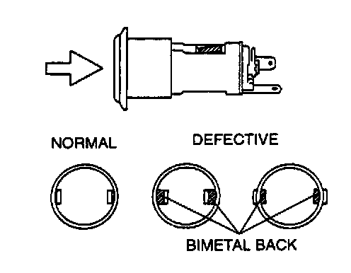
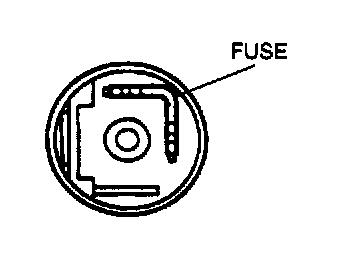

Cigarette Lighter: Testing and Inspection
CIGARETTE LIGHTER INSPECTIONNOTE: Verify that the cigarette lighter plug will move normally within 20 - 30 seconds, after pressing the plug into the socket. If the fuse does not move, perform the following procedures.

1. Remove the socket.
2. Verify the bimetals in the socket are not warped.
3. Inspect if the backs of the bimetals can be seen from the inside or outside.
4. If the back of the bimetal can be seen from the inside, replace the socket.

5. If the fuse has been burnt, replace the socket.
6. If the bimetal and the socket are normal, replace the cigarette lighter plug